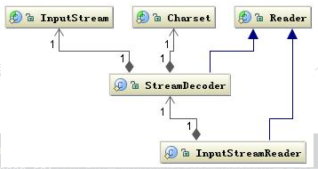
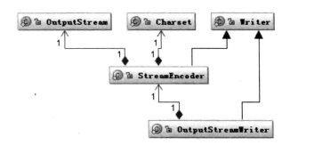
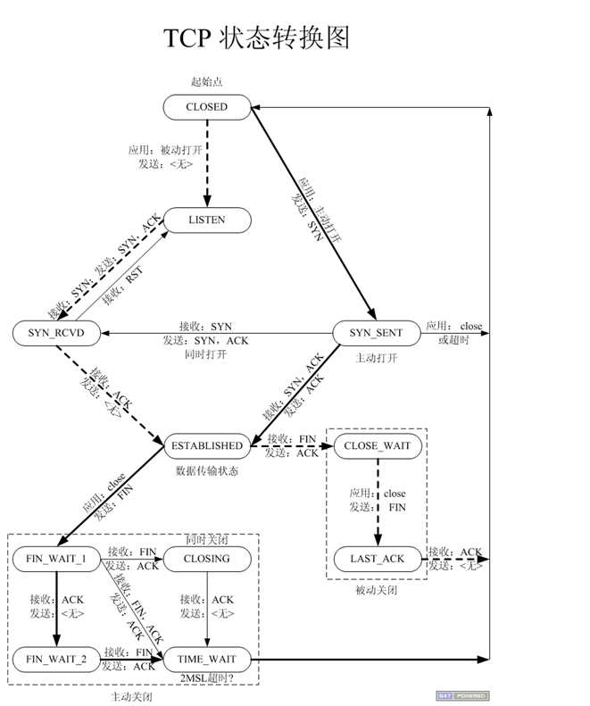
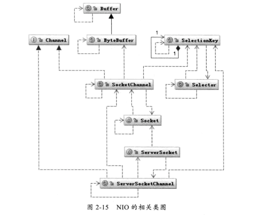
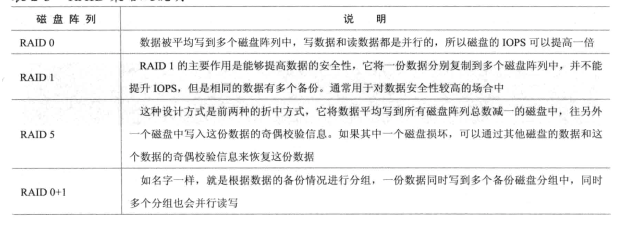
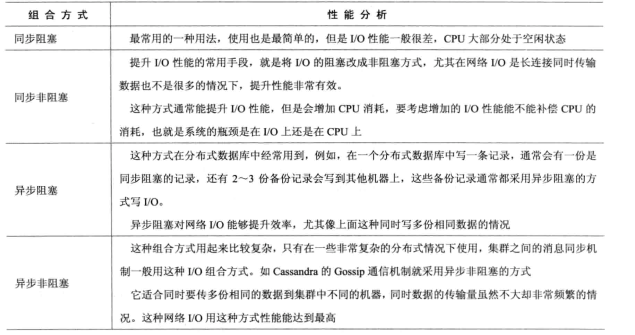

前言
本章会了解到哪些知识点
Java的I/O类库的基本架构,磁盘I/O工作机制,网络I/O的工作机制,了解NIO的工作方式,并了解同步和异步,阻塞和非阻塞的区别,常用的I/O优化技巧;
文中所用到的技术词注解
用户地址空间: 指的是应用程序可以直接访问的地址;
内核地址空间: 也就是系统空间,指的是应用程序不能直接访问,必须转到内核模式,由操作系统访问
RecvQ 表示收到的数据已经在本地接收缓冲，但是还有多少没有被进程取走
SendQ 对方没有收到的数据或者说没有Ack的,还是本地缓冲区
IOPS（Input/OutputOperations Per Second）是一个用于计算机存储设备（如硬盘（HDD）、固态硬盘（SSD）或存储区域网络（SAN））性能测试的量测方式，可以视为是每秒的读写次数。和其他性能测试一様，存储设备制造商提出的IOPS不保证就是实际应用下的性能。
I/O
1、Java的I/O类库的基本结构
Java的I/O操作类在包java.io下,大致分为四组
1、基于字节操作的I/O接口: InputStream和OutputStream
2、基于字符操作的I/O接口: Writer和Reader
3、基于磁盘操作的I/O接口: File
4、基于网络操作的I/O接口: Socket
前两组主要传输数据的数据格式,后两组主要传输数据的方式,Socket类并不在java.io包下
1. 基于字符的I/O操作接口
不管是磁盘还是网络传输,最小的存储单元都是字节,而不是字符,所有I/O操作的都是
字节而不是字符
注意点
1、操作数据的方式可以组合使用OutputStream out=new BufferedOutputStream(new ObjectOutputStream(new FileOutputStream(“finaName”));
2、指定写入到什么地方,要么写到磁盘,要么写到网络(写到网络其实也是写到磁盘,不过不是本地磁盘);
字节与字符的转化接口
数据持久化或网络传输都是以字节进行,所以必须要有字符到字节或字节到字符的转化,从字符到字节需要转换,InputStreamReader类是从字节到字符的转换桥梁,从InputStream到Reader的过程要
指定编码字符集,否则将采用系统默认的字符集,这样可能会导致乱码,StreamDecoder正是从字节转换到字符解码的实现类,也就是当你用如下方式读取一个文件时:
2
3
4
5
6
7
char[] buf=new char[1024];
FileReader fr=new FileReader("E:/java/workspace/Concurrency/src/test/java/com/test/test.txt");
while(fr.read(buf)>0){
sb.append(buf);
}
System.out.println(sb.toString());

FileReader类就是按照上面的工作方式读取文件的,FileReader继承了InputStreamReader类,然后通过StreamDecoder解码成char;
字符到字节的编码
如下图

2、磁盘I/O工作机制
几种访问文件的方式
读取和写入文件I/O操作都调用操作系统提供的接口,因为磁盘是由操作系统管理的,
应用程序要访问物理设备只能通过系统调用的方式来工作,而系统调用就可能存在内核空间地址和用户空间地址切换的问题,这是操作系统为了保护系统本身的运行安全;
1、标准访问文件的方式
标准的访问文件的方式就是当应用程序调用read()接口时,操作系统检查在内核的高速缓存中有没有需要的数据,如果有则读取缓存中的,如果没有,则前往磁盘中读取,然后缓存在操作系统中;
写入的方式是,用户的应用程序调用writer()接口,将数据从用户地址空间复制到内核地址空间的缓存中(注:未直接写入,而只是存入到缓存中),而数据到磁盘中由操作系统来决定什么时候写入,除非显式的调用了sync(Synchronized?)同步命令;
2、直接I/O的方式
直接I/O的方式就是应用程序不通过 操作系统直接访问磁盘数据,这种访问文件的方式通常是在对
数据的缓存管理由应用程序实现的数据库管理系统中,如在数据库管理系统中,系统明确的知道应该缓存哪些数据,应该失效哪些数据,还可以对一些热点数据进行预加载到内存中,这样虽然减少了一次从内核缓存区到用户程序的数据复制,但也存在负面影响,例如访问的数据不存在应用程序缓存中,那么每次都会直接从磁盘进行加载,通常直接I/O与异步I/O结合视同,会得到比较好的性能;
3、同步访问文件的方式
就是数据的读取和写入都是同步操作,它与标准访问文件的方式不同的是,只有当数据被成功写到磁盘时,才返回给程序成功的标志
这种访问文件的方式性能比较差,只有在一些对数据安全下要求比较高的场景中才会使用到;
4、异步访问文件的方式
当访问数据的线程发出请求之后,线程会接着去处理其它事情,而不是阻塞等待,当请求的数据返回后继续处理下面的操作,这种访问文件的方式可以明显提高应用程序的效率,但是不会改变访问文件的效率;
Java访问磁盘文件
Java中的File并不代表一个真实存在的对象,当你指定一个路径时,该路径代表的只是一个虚拟对象;
为何要这样设计呢?
设计的原由:在大多数情况下,我们并不关心这个文件是否真的存在,而是关系对这个文件要进行什么操作,例如,在我们手机通讯录里面存了几百个朋友的电话号码,我们只关心存不存在某个好友的电话号码,而至于这个号码是否还能打通,我们只会在需要去给这个朋友拨号时才关注;
何时才会去检查这个文件是否存在?
在真正对文件操作时就会去判断是否存在,例如,FileInputStream类都是操作一个文件的接口,在创建一个FileInputStream对象时会创建一个FilDescriptor对象,其实这个对象就是真正代表一个存在的文件对象的描述;
传入一个文件的过程
当传入一个文件路径时,首先会根据这个路径创建一个File对象来标识这个文件,然后根据这个File对象创建真正读取文件的操作对象,这时将会真正创建一个关联真实存在的磁盘文件的文件描述符FileDescriptor,通过这个对象可以直接控制这个磁盘文件,由于我们需要读取的是字符格式,所有StreamDecoder类将byte解码为char格式,至于如何从磁盘驱动器上读取一段数据,操作系统会帮我们完成,至于操作系统如何将数据持久化到磁盘及如何简历数据结构的,需要根据当前操作系统使用何种文件系统来回答;
Java序列化技术
并不是很理解,不做记录,Serializable终究会接触
3、网络I/O工作机制
数据从一台主机发送到网络中的另一台主机需要很多步骤,首先需要有沟通的意向,其次要有能够沟通的物理渠道(物理链路):是通过电话,还是直接面对面交流,而且双方说法的步调要一致,明白什么时候自己说话,什么时候该对方说话(通信协议),该节将重点通信协议和网络传输;
TCP状态转化
TCP状态转换图,不跟着状态走,基本记不住,先留存

影响网络传输的因素
将一份数据从一个地方正确的传输到另一个地方所需要的时间我们称之为响应时间,影响响应时间的因素有很多
1、 网络带宽: 所谓带宽就是一条物理链路在1s内能够传输的最大比特数,注意这里是比特(bit)而不是字节数,也就是b/s,网络带宽肯定是影响数据传输的一个关键环节;
2、传输距离: 也就是数据在光纤中要走的距离,虽然光的传播速度很快,但也是有时间的,由于数据在光纤中的移动并不是走直线,会有一个折射率,所以大概是光的2/3,这个时间也就是我们通常所说的传输延时;
3、TCP拥塞控制:我们知道TCP传输是一个”停-等-停-等”的协议,传输方和接收方的步调要一致,要达到步调一致就要通过拥塞控制来调节,TCP在传输时会设定一个窗口,这个窗口大小是由带宽和RTT(Round-Trip time,数据在两端的来回时间,也就是响应时间)决定的;
Java Socket的工作机制
Socket类似与两个城市之间的交通工具,有了它就可以在两个城市之间来回,而城市通过这个交通工具来连接,交通工具有多种,每种交通工具也有相应的交通规则,Socket也一样,也有多种,大部分情况下我们使用的都是基于TCP/IP的流套接字,它是一种稳定的通信协议
主机A的应用程序要能和主机B的应用程序通信,必须通过Socket建立连接,而建立Socket连接必须由底层TCP/IP来建立TCP连接,建立TCP连接需要底层的IP来寻址网络中的主机,网络层使用IP来寻找主机,但如果一台主机中运行多个应用程序,时,就需要通过TCP或UPD的地址也就是端口号来指定访问哪个应用程序了;
建立通信链路
客户端: 当客户端要与服务端通信时,客户端要先创建一个Socket,操作系统为这个Socket分配一个没有被使用的本地的端口号,并创建一个包含本地地址,远程地址和端口号的套接字数据结构,这个数据结构会保存到这个连接关闭,在创建Socket实例的构造函数正确返回之前,TCP要进行3次握手协议,TCP握手协议完成后,才创建Socket实例,否则抛出IOException错误;
服务端: 服务端的Socket创建比较简单,只要指定的端口号没有被占用,一般都会创建成功,同时操作系统也会会ServerSocket实例创建一个底层数据结构,该数据结构中包含指定的监听号和包含监听地址的通配符,通常情况下都是 * ,即监听所有地址;
数据传输
传输数据是我们建立连接的主要目的,当连接建立成功时,服务端和客户端都会有一个Socket实例,每个Socket实例都会有一个InputStream和OutputStream,并通过这两个对象来交换数据,同时我们也知道网络I/O都是以字节流传输的,当创建Socket对象时,操作系统将会InputStream和OutputStream分别分配一定大小的缓存区,
数据的写入和读取都是通过这个缓存区完成的,写入端将数据写到OutputStream的RecvQ队列中,当队列填满时,数据将被转移到另一端InputStream到RecvQ队列,如果这是RecvQ已经满了,那么OutputStream的write方法将会阻塞,知道RecvQ队列有足够的空间容纳SendQ发送的数据,网络I/O与磁盘I/O不同的是数据的写入和读取还要有一个协调的过程,如果两边同时传送数据可能会产生死锁;
4、NIO的工作方式
BIO带来的挑战
BIO即阻塞I/O,不管是磁盘I/O还是网络I/O,数据在写入OutputStream或者从InputStream读取时都有可能会阻塞,一旦阻塞,线程将会失去CPU的使用权,虽然存在一些解决方法但并不能解决实际问题,所以我们需要另外一种新的I/O操作方式;
NIO的工作机制

Channel和Selector是NIO中的两个核心概念,Selector好比一个车站的车辆运行调度系统,它将负责监控每辆车的当前运行状态,是已出站还是在路上的,也就是它可以轮询每个Channel的状态,Buffer类,它比Stream更加具体,例如我们可以将它比作扯上的座位,Channel是汽车的话Buffer类就是汽车上的座位,它始终是一个具体的概念,与Stream不同,Stream只能代表一个座位;NIO引入Channel,buffer和Selector,就是想把这些信息具体化,让程序员有机会控制他们,例如,当我们调用write()往SendQ中写数据时,当一次写的数据超过SendQ长度时需要按照SendQ的长度进行分割,在这个过程中需要将用户空间数据和内核地址空间进行切换,而这个切换不是你可以控制的,但在Buffer中我们可以控制Buffer的容量,是否扩容以及如何扩容;
Buffer的工作方式
Buffer可以简单的理解为一组基本数据类型的元素列表,它通过几个变量来保存这个数据的当前位置.也就是索引
capacity: 缓冲区数组的总长度
position: 下一个要操作的数据元素的位置
limit: 缓冲区数组中不可操作的下一个元素的位置,limit<=capacity
mark: 用于记录当前position的前一个位置或者默认是0
NIO的数据访问方式
NIO提供了比传统的文件访问方式更好的方法,NIO有两个优化方法:一个是FileChannel.transferTo,FileChannel.transferFrom,另一个是FileChannel.map;
1, FileChannel.transferxxx与传统的访问文件方式相比可以减少数据从内核到用户控件的复制,数据直接在内核控件中移动,在Linux中使用sendfile系统调用;
2, FileChannel.map将文件按照一定大小块映射为内存区域,当程序访问这个内存区域时,将直接操作这个文件数据,这种方式省去了数据从内核空间向用户空间复制的损耗,这种方式适合对大文件的只读性操作,如大文件的MD5校验,但是这种方式适合操作系统底层I/O实现相关的;
5、I/O调优
磁盘I/O优化
性能检测
要判断I/O是否是一个瓶颈,我们可以压力测试应用程序,查看系统的I/Owait指标是否正常,例如机器的四个CPU,理想状态下I/O的wait参数不应该超过25%,如果超过25%,I/O很可能为应用程序的性能瓶颈;
判断I/O性能时,我们还可以查看IOPS参数,我们既要查看应用程序所需要的最低IOPS是多少,磁盘的IOPS是否达到要求,每个磁盘的IOPS通常在一个范围内,但主要是由磁盘的转速决定的,磁盘的转速越高,磁盘的IOPS也也越高;
提升I/O性能
通常提升磁盘I/O性能的方法有:
1, 增加缓存,减少磁盘访问次数
2, 优化磁盘的管理系统,设计最优的磁盘方式策略,已经磁盘的寻址策略,这是在底层操作系统层面考虑的
3, 设计何来的磁盘存储数据库,已经访问这些数据库的策略,这是在应用层面考虑的
4, 应用合理的RAID策略提升磁盘I/O,RAID策略以说明如图:

TCP网络参数调优
要建立一个TCP连接,必须知道对方的IP和一个未被使用的端口号,由于32位操作系统的端口号通常由两个字节表示,也就是只有5535个,所以一台主机能够同时简历的连接数是有限的,当然操作系统还有一些端口0~1024是受保护的,如80端口,22端口,这些端口都不能被随意占用;
网络I/O优化
网络I/O优化通常有如下一些基本处理原则
1, 减少网络交互的次数,要减少网络交互的次数通常需要在网络交互的两端设置缓存,除了设置缓存之外,还可以合并访问请求,如在查询数据库时,我们要查10个ID,可以每次查一个ID,也可以一次查10个ID;
2, 减少网络传输数据量的大小,减少网络数据量的办法通常是将数据压缩后再传输,如在HTTP请求中,通常WEB服务器将请求的WEB页面gzip压缩后再传输给浏览器,还有就是通过设计简单的协议,经历通过读取协议头来获取有用的价值信息,如在设计代理程序时,4层代理和7层代理都是在经历避免要读取整个通信数据来取得需要的信息;
3, 尽量减少编码,通常在网络I/O中数据传输都是以字节形式进行的,也就是说通常要序列化,但是我们发送的要传输的数据都是字符形式的,从字符到字节必须编码,但是这个编码过程是比较耗时的,所以在要经过网络I/O传输时,尽量直接以字节形式发送,也就是尽量提前将字符转化为字节,或者减少从字符到字节的转化过程
A) 同步与异步
同步时,任务会要么全部成功,要么全部失败,异步时,任务有的执行成功有的执行失败,但是同步与异步的处理方式对程序的可靠性影响非常大,同步能够爆照程序的可靠性,而异步可以提升程序的性能;
B) 阻塞与非阻塞
阻塞与非阻塞主要是从CPU的消耗上来说的,阻塞就是CPU停下来等待一个慢的操作完成以后,CPU猜接着完成其它的工作,非阻塞就是在这个慢的执行操作时,CPU去做其它工作,等这个慢的操作完成后,CPU再接着完成后续的操作,虽然从表面上看非阻塞的方式可明显提高CPU的是用来,但也会造成系统的线程切换增加,增加的CPU使用时间能不能补偿系统的切换成本需要好好评估;
C) 两种方式的组合
组合的方式有4中,分别为同步阻塞,同步非阻塞,异步阻塞,异步非阻塞,组合方式和性能分析看下图

总结
通过本章,了解了系统I/O的操作方式,网络的I/O操作方式,Socket的连接方式,以及不管是系统I/O还是网络I/O之间的优化;
1, Java中IO操作的基本类,明白在I/O操作,所有的I/O操作都是字节而不是字符,在Java中的I/O操作,JAVA通过StreamDecoder来帮我们将读取或者写入的文件进行了解码工作;
2, 当我们使用应用程序对物理设备(例如磁盘)来做读写操作时,一般都是通过操作系统提供给我们的read()和writer()接口来操作,但在访问文件的时候,可以通过直接访问来提高访问效率,在Java中访问文件时,我们提供的一个地址是虚拟的,文中例子来比喻,当我们要拨打电话号码时,我们才会去检查这个号码是否能打通,否则他只是存在与通讯录中而已
3, 网络中的I/O机制中,首先对会影响网络传输的因素做了3个比较常见的原因,然后讲解JAVASocket的工作机制(JAVASocket如何连接其它主机,以及在连接过程中都做了什么),之后讲解了通信链路的建立,例如客户端需要传送什么给服务端,服务端需要有那些双方才能成功建立连接,最后讲解数据的传输,在数据传输过程中,为了不对磁盘做出损坏或等等原因,一般在输入输出时会在中间建立一个缓存,而在缓存中存在RecvQ队列和SendQ队列,当俩个队列满了时,我们的写入和输出都会出现异常;
4, NIO的工作方式,首先讲解在BIO(阻塞I/O)时,数据吸入一旦出现阻塞,线程将会失去CPU的使用权,而这个解决方法就是新的I/O操作方式,NIO的工作机制并不是很理解,虽然例子比较生动;
5, I/O调优,讲解如何来简单压测出当前的I/O是否是一个瓶颈,讲解如何几种提升I/O性能的参考,以及网络I/O中怎么优化,提供了网络I/O组合优化的性能分析等